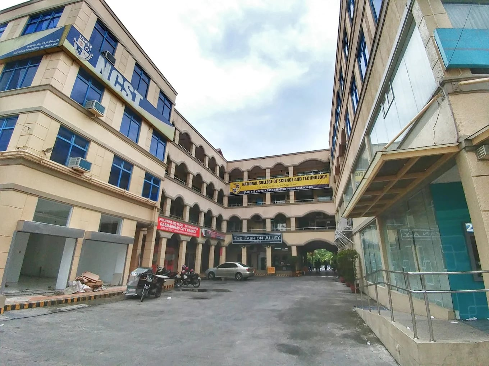
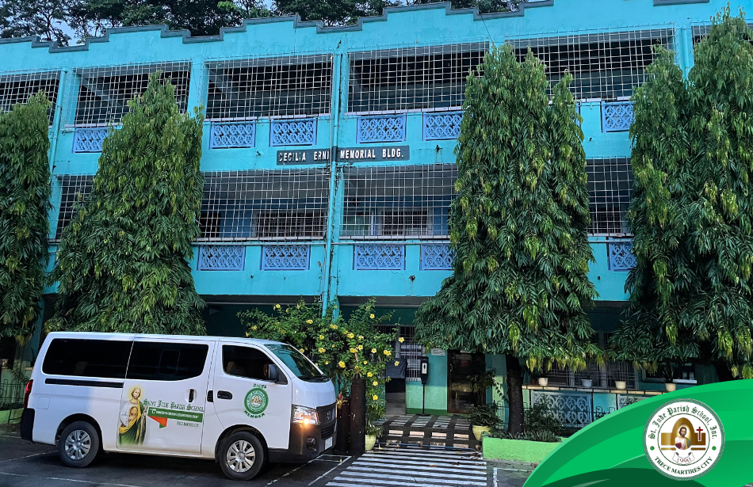

About me 𐙚 ‧₊˚
Age:18 Birthday: July 25 Contact:09270517412
Facebook: Aly Alfonso Gmail:Alyzajoy9@gmail.com
Im currently in my first year of college taking the course of BSIT 2024-2025 at National College of Science and Technology
National College of Science and Technology
140 Aguinaldo Hwy, Dasmariñas, Cavite
I graduated from Saint Jude Parish School taking the strand STEM
Saint Jude Parish School
Address: 7VJ9+RP4, Governor's Dr, Trece Martires, Cavite